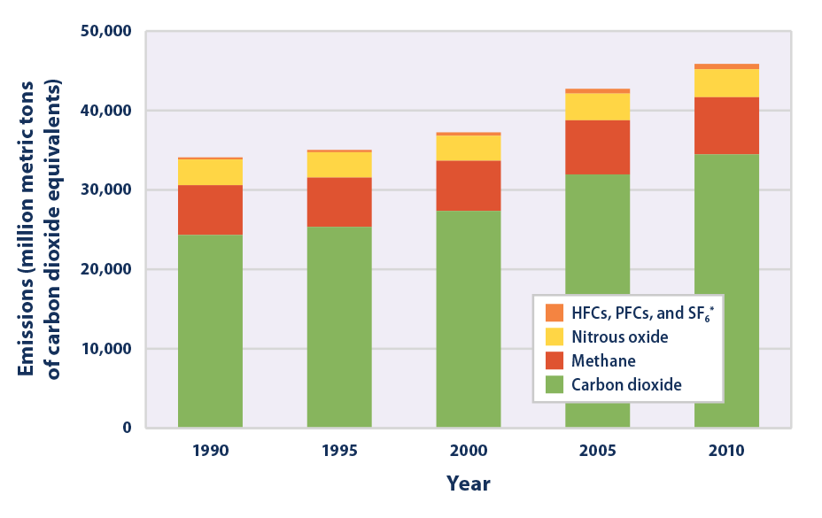
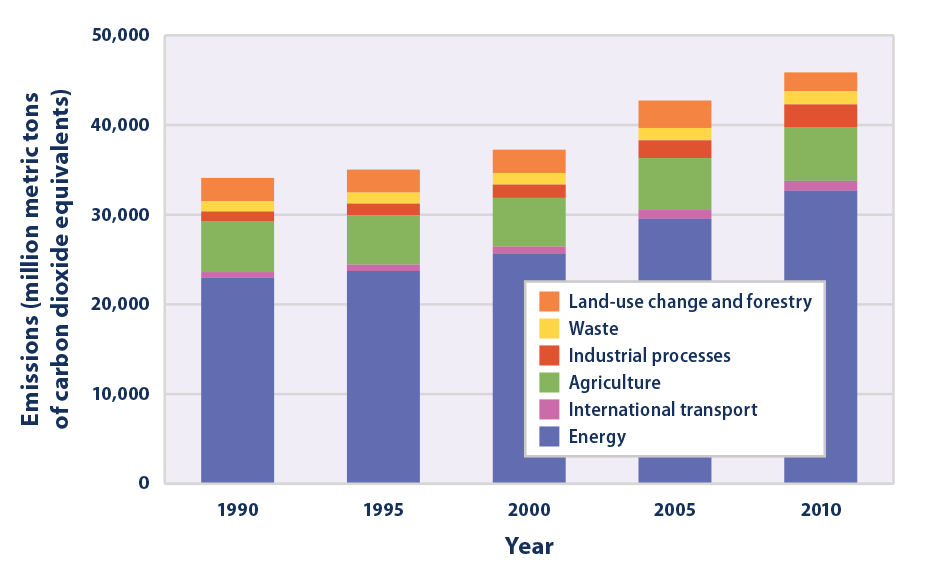
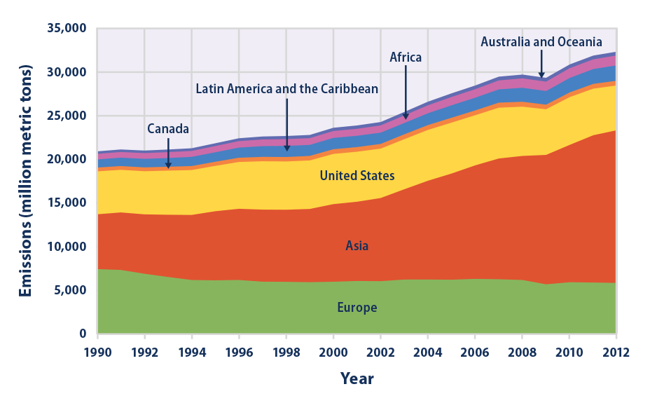

Climate Change Indicators: Global Greenhouse Gas Emissions
This indicator describes emissions of greenhouse gases worldwide.
- 
This figure shows worldwide emissions of carbon dioxide, methane, nitrous oxide, and several fluorinated gases from 1990 to 2010. For consistency, emissions are expressed in million metric tons of carbon dioxide equivalents. These totals include emissions and sinks due to land-use change and forestry.
* HFCs are hydrofluorocarbons, PFCs are perfluorocarbons, and SF6 is sulfur hexafluoride.
- 
This figure shows worldwide greenhouse gas emissions by sector from 1990 to 2010. For consistency, emissions are expressed in million metric tons of carbon dioxide equivalents. These totals include emissions and sinks due to land-use change and forestry.
Note that the sectors shown here are different from the economic sectors used in U.S. emissions accounting (see the U.S. Greenhouse Gas Emissions indicator). Emissions from international transport (aviation and marine) are separate from the energy sector because they are not part of individual countries’ emissions inventories. The energy sector includes all other transportation activities.
- 
This figure shows carbon dioxide emissions from 1990 to 2012 for different regions of the world. These totals do not include emissions or sinks related to land-use change or forestry. Inclusion of land-use change and forestry would increase the apparent emissions from some regions while decreasing the emissions from others.
Data source: WRI, 20156
Web update: August 2016
{kind=link}
{kind=link}
{kind=link}
Key Points
- In 2010, estimated worldwide emissions from human activities totaled nearly 46 billion metric tons of greenhouse gases, expressed as carbon dioxide equivalents. This represents a 35 percent increase from 1990 (see Figures 1 and 2). These numbers represent net emissions, which include the effects of land use and forestry.
- Between 1990 and 2010, global emissions of all major greenhouse gases increased (see Figure 1). Net emissions of carbon dioxide increased by 42 percent, which is particularly important because carbon dioxide accounts for about three-fourths of total global emissions. Nitrous oxide emissions increased the least—9 percent—while emissions of methane increased by 15 percent. Emissions of fluorinated gases more than doubled.
- Energy production and use (including fuels used by vehicles) represent the largest source of greenhouse gas emissions worldwide (about 71 percent of the total in 2010), followed by agriculture (13 percent in 2010) (see Figure 2). While land-use change and forestry represent a net sink for emissions in the United States, absorbing carbon dioxide and offsetting emissions from other sources (see the U.S. Greenhouse Gas Emissions indicator), these activities are a net source of emissions on a global scale, largely because of deforestation.1
- Carbon dioxide emissions are increasing faster in some parts of the world (for example, Asia) than in others (see Figure 3). The majority of emissions come from three regions: Asia, Europe, and the United States, which together accounted for 88 percent of total global emissions in 2012.
Background
Increasing emissions of greenhouse gases due to human activities worldwide have led to a substantial increase in atmospheric concentrations of long-lived and other greenhouse gases (see the Atmospheric Concentrations of Greenhouse Gases indicator). Every country around the world emits greenhouse gases into the atmosphere, meaning the root cause of climate change is truly global in scope. Some countries produce far more greenhouse gases than others, and several factors—such as economic activity (including the composition and efficiency of the economy), population, income level, land use, and climatic conditions—can influence a country’s emissions levels. Tracking greenhouse gas emissions worldwide provides a global context for understanding the United States’ and other nations’ roles in climate change.
About the Indicator
Like the U.S. Greenhouse Gas Emissions indicator, this indicator focuses on emissions of gases covered under the United Nations Framework Convention on Climate Change: carbon dioxide, methane, nitrous oxide, and several fluorinated gases. These are all important greenhouse gases that are influenced by human activities, and the Convention requires participating countries to develop and periodically submit an inventory of these emissions.
Data and analysis for this indicator come from the World Resources Institute’s Climate Analysis Indicators Tool (CAIT), which compiles data from peer-reviewed and internationally recognized greenhouse gas inventories developed by EPA and other government agencies worldwide. Global estimates for carbon dioxide are published annually, but estimates for other gases, such as methane and nitrous oxide, are available only every fifth year. CAIT includes estimates of emissions and sinks associated with land use and forestry activities, which come from global estimates compiled by the Food and Agriculture Organization of the United Nations.
Each greenhouse gas has a different lifetime (how long it stays in the atmosphere) and a different ability to trap heat in our atmosphere. To allow different gases to be compared and added together, emissions are converted into carbon dioxide equivalents. This step uses each gas’s 100-year global warming potential, which measures how much a given amount of the gas is estimated to contribute to global warming over a period of 100 years after being emitted. Carbon dioxide is assigned a global warming potential equal to 1. This analysis uses global warming potentials from the Intergovernmental Panel on Climate Change’s (IPCC’s) Second Assessment Report. In that report, methane has a global warming potential of 21, which means a ton of methane emissions contributes 21 times as much warming as a ton of carbon dioxide emissions over 100 years, and that ton of methane emissions is therefore equal to 21 tons of carbon dioxide equivalents. See the table for comparison with global warming potentials from IPCC’s Fifth Assessment Report.
Indicator Notes
Like the U.S. Greenhouse Gas Emissions indicator, this indicator does not include emissions of gases that affect climate but are not covered under the United Nations Framework Convention on Climate Change. For example, this indicator excludes ozone-depleting substances such as chlorofluorocarbons (CFCs) and hydrochlorofluorocarbons (HCFCs), which have high global warming potentials, because these gases have been or are currently being phased out under an international agreement called the Montreal Protocol. This indicator also excludes black carbon and aerosols, which most emissions inventories do not cover. There are also various emissions of greenhouse gases of natural origin, which this indicator does not cover.
Global emissions inventories for gases other than carbon dioxide are limited to five-year intervals. The United Nations Framework Convention on Climate Change database has more comprehensive data; however, these data are available mainly for a group of mostly developed countries that account for only about half of global greenhouse gas emissions. Thus, to provide a more representative measure of global greenhouse gas emissions, this indicator uses the broader CAIT database.
Data Sources
Data for this indicator came from the World Resources Institute’s CAIT database, which is accessible online at: http://cait.wri.org. CAIT compiles data that were originally collected by organizations including the International Energy Agency, EPA, the U.S. Carbon Dioxide Information Analysis Center, and the Food and Agriculture Organization of the United Nations. Other global emissions estimates—such as the estimates published by the Intergovernmental Panel on Climate Change7—are based on many of the same sources.
Technical Documentation
References
1. IPCC (Intergovernmental Panel on Climate Change). 2014. Climate change 2014: Mitigation of climate change. Working Group III contribution to the IPCC Fifth Assessment Report. Cambridge, United Kingdom: Cambridge University Press. www.ipcc.ch/report/ar5/wg3.
2. WRI (World Resources Institute). 2014. Climate Analysis Indicators Tool (CAIT) 2.0: WRI’s climate data explorer. Accessed May 2014. http://cait.wri.org.
3. FAO (Food and Agriculture Organization). 2014. FAOSTAT: Emissions—land use. Accessed May 2014. http://faostat3.fao.org/faostat-gateway/go/to/download/G2/*/E.
4. WRI (World Resources Institute). 2014. Climate Analysis Indicators Tool (CAIT) 2.0: WRI’s climate data explorer. Accessed May 2014. http://cait.wri.org.
5. FAO (Food and Agriculture Organization). 2014. FAOSTAT: Emissions—land use. Accessed May 2014. http://faostat3.fao.org/faostat-gateway/go/to/download/G2/*/E.
6. WRI (World Resources Institute). 2015. Climate Analysis Indicators Tool (CAIT) 2.0: WRI’s climate data explorer. Accessed December 2015. http://cait.wri.org.
7. IPCC (Intergovernmental Panel on Climate Change). 2014. Climate change 2014: Mitigation of climate change. Working Group III contribution to the IPCC Fifth Assessment Report. Cambridge, United Kingdom: Cambridge University Press. www.ipcc.ch/report/ar5/wg3.